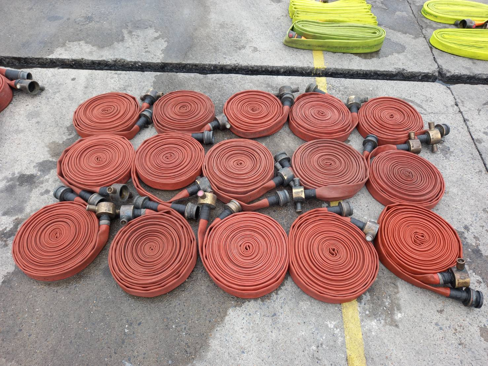

Emergency Responsteam
ทีมตอบโต้เหตุฉุกเฉิน

เป็นการทดสอบสายส่งน้ำดับเพลิงประจำปี 2566 เนื่องจากเมื่อตรวจสอบเสร็จแล้วจะต้องมีการจดบันทึกข้อมูล สายขาด สายชำรุด หรือ บริเวณพื้นที่ใด ที่มีสายส่งน้ำดับเพลิงไม่พอจะทำการตรวจสอบและจัดหาให้เพียงพอต่อสถานที่


เป็นสายที่ทำการทดสอบแล้ว พบมีสายแตกและชำรุด เป็นสายส่งน้ำดับเพลิงชนิดยาง จำนวน 12 เส้น ซึ่งจะดำเนินการซ่อมแซมในลำดับต่อไป แต่สายใดที่ไม่สามารถแก้ไขหรือซ่อมแซมได้ จะทำการเสนอซื้อตามจำนวนที่ไม่สามารถแก้ไขได้ และสายส่งน้ำดับเพลิงสีเหลือง จำนวน 5 เส้น